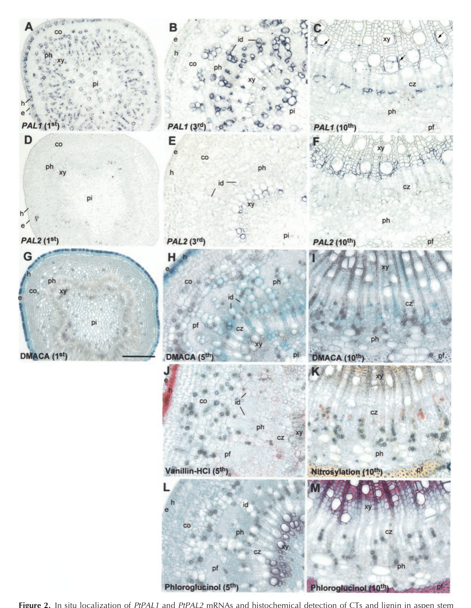

Cytoplasmic phenylalanine ammonia-lyase (EC 4.3.1.24) catalyzing the first committed, non-oxidative deamination of L-phenylalanine to trans-cinnamate, the entry-point reaction of the phenylpropanoid pathway. Downstream phenylpropanoid metabolism in Populus supplies monolignols/lignin in lignifying xylem and condensed tannins/flavonoids/phenolic glycosides in specialized non-lignifying tissues, with the five-member PtrPAL gene family functionally partitioned between these outputs.
| GO Term | Evidence | Action | Reason |
|---|---|---|---|
|
GO:0003824
catalytic activity
|
IEA
GO_REF:0000002 |
MODIFY |
Summary: Generic catalytic activity is correct but uninformative for a characterized PAL enzyme.
Reason: Replace the root catalytic activity term with the specific phenylalanine ammonia-lyase activity term, which captures the actual reaction (L-phenylalanine to trans-cinnamate + NH4+).
Proposed replacements:
phenylalanine ammonia-lyase activity
Supporting Evidence:
file:POPTR/PAL/PAL-uniprot.txt
L-phenylalanine = (E)-cinnamate + NH4(+)
file:POPTR/PAL/PAL-deep-research-falcon.md
non-oxidative deamination** of **L-phenylalanine** to yield **trans-cinnamic acid**
|
|
GO:0005737
cytoplasm
|
IEA
GO_REF:0000120 |
ACCEPT |
Summary: Cytoplasm is the reviewed UniProt location for Populus PAL.
Reason: UniProt assigns PAL to the cytoplasm. Falcon notes that the retrieved Populus literature did not independently resolve a subcellular compartment for P45730, so the UniProt cytoplasmic assignment is retained as the best-supported localization.
Supporting Evidence:
file:POPTR/PAL/PAL-uniprot.txt
SUBCELLULAR LOCATION: Cytoplasm
|
|
GO:0006559
L-phenylalanine catabolic process
|
IEA
GO_REF:0000002 |
ACCEPT |
Summary: L-phenylalanine catabolic process correctly captures the PAL deamination reaction.
Reason: PAL deaminates L-phenylalanine to trans-cinnamate and ammonium, which is consumption (catabolism) of L-phenylalanine. Supported by the UniProt reaction and the falcon synthesis.
Supporting Evidence:
file:POPTR/PAL/PAL-uniprot.txt
L-phenylalanine = (E)-cinnamate + NH4(+)
file:POPTR/PAL/PAL-deep-research-falcon.md
non-oxidative deamination** of **L-phenylalanine** to yield **trans-cinnamic acid**
|
|
GO:0009611
response to wounding
|
IEA
GO_REF:0000117 |
KEEP AS NON CORE |
Summary: Response to wounding is a plausible downstream/defense context for phenylpropanoid metabolism but is not the core enzymatic function of PAL, and the falcon corpus provides no direct wound-response evidence for Populus PAL.
Reason: Retain as non-core. The defense-related role of PAL-derived phenylpropanoids (condensed tannins, phenolic glycosides) is well supported at the pathway level, but a specific wound-response function for this protein is an ARBA electronic inference and is downstream of the committed catalytic step.
Supporting Evidence:
file:POPTR/PAL/PAL-deep-research-falcon.md
including **lignin**, **flavonoids**, **condensed tannins (proanthocyanidins)**, and **phenolic glycosides**
|
|
GO:0016841
ammonia-lyase activity
|
IEA
GO_REF:0000002 |
MODIFY |
Summary: Ammonia-lyase activity is correct but less specific than phenylalanine ammonia-lyase activity.
Reason: Replace the grouping term with the substrate-specific phenylalanine ammonia-lyase activity term, consistent with the UniProt reaction and the falcon entry-reaction description.
Proposed replacements:
phenylalanine ammonia-lyase activity
Supporting Evidence:
file:POPTR/PAL/PAL-uniprot.txt
L-phenylalanine = (E)-cinnamate + NH4(+)
file:POPTR/PAL/PAL-deep-research-falcon.md
non-oxidative deamination** of **L-phenylalanine** to yield **trans-cinnamic acid**
|
|
GO:0045548
phenylalanine ammonia-lyase activity
|
IEA
GO_REF:0000120 |
ACCEPT |
Summary: Phenylalanine ammonia-lyase activity is the core molecular function of PAL.
Reason: The reaction converts L-phenylalanine to trans-cinnamate and ammonium (EC 4.3.1.24), the committed entry reaction of phenylpropanoid biosynthesis.
Supporting Evidence:
file:POPTR/PAL/PAL-uniprot.txt
L-phenylalanine = (E)-cinnamate + NH4(+)
file:POPTR/PAL/PAL-deep-research-falcon.md
the canonical **entry reaction** from aromatic amino-acid metabolism into **phenylpropanoid biosynthesis**
|
|
GO:0046395
carboxylic acid catabolic process
|
IEA
GO_REF:0000117 |
MODIFY |
Summary: Carboxylic acid catabolic process is too broad for the PAL reaction.
Reason: The substrate-specific L-phenylalanine catabolic process (already accepted) is the appropriate term; the generic carboxylic acid catabolic grouping adds no information.
Proposed replacements:
L-phenylalanine catabolic process
Supporting Evidence:
file:POPTR/PAL/PAL-uniprot.txt
L-phenylalanine = (E)-cinnamate + NH4(+)
file:POPTR/PAL/PAL-deep-research-falcon.md
non-oxidative deamination** of **L-phenylalanine** to yield **trans-cinnamic acid**
|
|
GO:0009800
cinnamic acid biosynthetic process
|
IEA
GO_REF:0000041 |
ACCEPT |
Summary: Cinnamic acid biosynthetic process is the direct product process of PAL.
Reason: PAL produces trans-cinnamate from L-phenylalanine (UniPathway step 1/1), the committed entry into phenylpropanoid metabolism. Supported by the UniProt pathway statement and the falcon entry-reaction synthesis.
Supporting Evidence:
file:POPTR/PAL/PAL-uniprot.txt
trans-cinnamate biosynthesis
file:POPTR/PAL/PAL-deep-research-falcon.md
the canonical **entry reaction** from aromatic amino-acid metabolism into **phenylpropanoid biosynthesis**
|
|
GO:0045548
phenylalanine ammonia-lyase activity
|
ISS
GO_REF:0000024 |
ACCEPT |
Summary: Phenylalanine ammonia-lyase activity transferred by sequence similarity from the experimentally characterized ortholog (UniProtKB:P24481).
Reason: The ISS transfer is well founded; PAL is a conserved member of the PAL/histidase family with the autocatalytic MIO active site, and the reaction is the same committed deamination of L-phenylalanine to trans-cinnamate.
|
Q: Which Populus tissues and stresses induce this PAL isoform relative to the other four PtrPAL paralogs (PtrPAL1-PtrPAL5)?
Q: Does this PAL isoform preferentially support lignin (xylem/monolignol flux) versus condensed-tannin/flavonoid phenylpropanoid output?
Experiment: Measure phenylalanine-to-cinnamate conversion and downstream phenylpropanoid metabolite pools (monolignols, flavonoids, condensed tannins) after PAL knockdown or overexpression in Populus.
Type: targeted functional assay
Experiment: Map this PAL isoform to a specific Potri locus and resolve its subcellular localization (cytosol vs microsomal/ER association) by fractionation and fluorescent-protein fusion, since the retrieved literature did not resolve the compartment for P45730.
Type: localization and isoform-mapping study
The research report should be a detailed narrative explaining the function, biological processes, and localization of the gene product. Citations should be given for all claims.
You should prioritize authoritative reviews and primary scientific literature when conducting research. You can supplement
this with annotations you find in gene/protein databases, but these can be outdated or inaccurate.
We are specifically interested in the primary function of the gene - for enzymes, what reaction is catalyzed, and what is the substrate specificity? For transporters, what is the substrate? For structural proteins or adapters, what is the broader structural role? For signaling molecules, what is the role in the pathway.
We are interested in where in or outside the cell the gene product carries out its function.
We are also interested in the signaling or biochemical pathways in which the gene functions. We are less interested in broad pleiotropic effects, except where these elucidate the precise role.
Include evidence where possible. We are interested in both experimental evidence as well as inference from structure, evolution, or bioinformatic analysis. Precise studies should be prioritized over high-throughput, where available.
The UniProt accession P45730 is annotated as phenylalanine ammonia-lyase (PAL; EC 4.3.1.24) from Populus trichocarpa. “PAL” is an extremely ambiguous symbol across taxa; therefore, this report restricts organism-specific functional statements to Populus PAL enzymes in the phenylpropanoid entry step (L-phenylalanine → trans-cinnamic acid) and uses Populus trichocarpa PAL family literature for gene-level context.
A key limitation is that, from the retrieved full texts, I could not explicitly map UniProt P45730 to a specific Populus trichocarpa locus (e.g., Potri.*) or to a specific family member (PtrPAL1–PtrPAL5). Consequently, isoform-specific claims are presented at the level of the Populus PAL family unless the underlying paper explicitly distinguishes PAL isoforms by sequence or locus identifiers. (jong2015characterisationofthe pages 1-2, jong2015characterisationofthe pages 2-3)
Phenylalanine ammonia-lyase (PAL) catalyzes the non-oxidative deamination of L-phenylalanine to yield trans-cinnamic acid, which constitutes the canonical entry reaction from aromatic amino-acid metabolism into phenylpropanoid biosynthesis in plants. (jong2015characterisationofthe pages 1-2, kao2002differentialexpressionof pages 1-2)
In Populus-focused literature, PAL is consistently described as controlling or strongly influencing carbon flux into phenylpropanoid-derived products, including lignin, flavonoids, condensed tannins (proanthocyanidins), and phenolic glycosides. (jong2015characterisationofthe pages 1-2, jong2015characterisationofthe pages 2-3, kao2002differentialexpressionof pages 1-2)
The phenylpropanoid pathway downstream of PAL supplies:
- Monolignols → lignin polymer (structural/wood formation)
- Flavonoids and condensed tannins (defense, photoprotection, specialized metabolism)
- Phenolic glycosides and diverse phenolic derivatives (often defense-associated)
This “gateway” role is explicit in Populus and Salicaceae comparative analyses (including willow–poplar comparisons). (jong2015characterisationofthe pages 1-2, jong2015characterisationofthe pages 2-3, ma2018twor2r3mybproteins pages 1-4)
From the retrieved Populus-specific texts, the substrate-level statement that can be made with high confidence is that Populus PAL catalyzes L-phenylalanine → trans-cinnamic acid. (jong2015characterisationofthe pages 1-2, kao2002differentialexpressionof pages 1-2)
The retrieved Populus texts do not provide kinetic constants (Km, kcat) or explicit experimental assessments of alternative substrates (e.g., tyrosine ammonia-lyase side activity) for Populus PAL isoforms; those would require consulting additional primary enzyme-biochemistry studies (some are referenced but not available in the retrieved set). (jong2015characterisationofthe pages 8-8)
A Salicaceae gene-family characterization that explicitly compares willow PALs to poplar reports that Populus trichocarpa contains five PAL genes (PtrPAL1–PtrPAL5) and provides Populus locus identifiers:
- PtrPAL1: Potri.006G126800
- PtrPAL2: Potri.008G038200
- PtrPAL3: Potri.016G091100
- PtrPAL4: Potri.010G224100
- PtrPAL5: Potri.010G224200 (jong2015characterisationofthe pages 1-2)
This same work organizes these genes into two main phylogenetic/expression groupings and summarizes functional associations drawn from Populus studies: a lignin-associated, xylem/root-tip-enriched group versus a more broadly expressed group more associated with condensed tannins/flavonoids/other phenolics. (jong2015characterisationofthe pages 2-3)
A concise gene-family summary is provided below.
| Species / dataset | Gene | Locus / identifier | Predominant expression pattern | Inferred functional association |
|---|---|---|---|---|
| Populus trichocarpa | PtrPAL1 | Potri.006G126800 | More broadly expressed; grouped with PtrPAL3 rather than xylem-enriched clade (jong2015characterisationofthe pages 1-2, jong2015characterisationofthe pages 2-3) | Predominantly associated with condensed tannins, flavonoids, and other phenolic metabolites rather than lignin (jong2015characterisationofthe pages 2-3) |
| Populus trichocarpa | PtrPAL2 | Potri.008G038200 | Mainly expressed in xylem and root tips; group A (jong2015characterisationofthe pages 1-2, jong2015characterisationofthe pages 2-3) | Predominantly associated with lignin production / monolignol flux (jong2015characterisationofthe pages 2-3) |
| Populus trichocarpa | PtrPAL3 | Potri.016G091100 | More broadly expressed; grouped with PtrPAL1 (jong2015characterisationofthe pages 1-2, jong2015characterisationofthe pages 2-3) | Predominantly associated with condensed tannins, flavonoids, and other phenolic metabolites (jong2015characterisationofthe pages 2-3) |
| Populus trichocarpa | PtrPAL4 | Potri.010G224100 | Mainly expressed in xylem and root tips; group A (jong2015characterisationofthe pages 1-2, jong2015characterisationofthe pages 2-3) | Predominantly associated with lignin production / monolignol flux (jong2015characterisationofthe pages 2-3) |
| Populus trichocarpa | PtrPAL5 | Potri.010G224200 | Mainly expressed in xylem and root tips; group A (jong2015characterisationofthe pages 1-2, jong2015characterisationofthe pages 2-3) | Predominantly associated with lignin production / monolignol flux (jong2015characterisationofthe pages 2-3) |
| Populus (quaking aspen) | PtPAL1 | cDNA-defined isoform; no Potri locus given in cited study | Expressed in CT-accumulating, non-lignifying cells of stems, leaves, and roots; strong in palisade/epidermal/hypodermal/cortical/root epidermis-exodermis domains (kao2002differentialexpressionof pages 1-2, kao2002differentialexpressionof pages 3-6, kao2002differentialexpressionof media 85cf2466) | Associated with condensed tannin sink strength and non-lignin phenylpropanoid metabolism; co-expression pattern parallels 4CL2 (kao2002differentialexpressionof pages 1-2, kao2002differentialexpressionof pages 3-6) |
| Populus (quaking aspen) | PtPAL2 | cDNA-defined isoform; no Potri locus given in cited study | Associated with heavily lignified structural shoot cells, xylem vessels/fibers, and root tips; localized to lignifying xylem domains (kao2002differentialexpressionof pages 1-2, kao2002differentialexpressionof pages 3-6, kao2002differentialexpressionof media 85cf2466) | Associated with lignifying tissues / structural phenylpropanoid metabolism; expression pattern parallels 4CL1 (kao2002differentialexpressionof pages 1-2, kao2002differentialexpressionof pages 3-6) |
Table: This table summarizes the five Populus trichocarpa PAL family members with Potri locus IDs and their inferred partitioning between lignin-associated versus condensed tannin/flavonoid-associated functions, based on de Jong et al. 2015. It also adds the classic quaking aspen PtPAL1/PtPAL2 cell-type specialization from Kao et al. 2002 to help interpret likely functional differentiation within poplar PAL genes.
A foundational Populus study (quaking aspen; Populus tremuloides) cloned two distinct PAL cDNAs (PtPAL1 and PtPAL2) and found strong cell-type partitioning:
- PtPAL1 associated with condensed tannin (CT)-accumulating, non-lignifying cells in stems/leaves/roots.
- PtPAL2 associated with heavily lignified structural xylem domains (vessels/fibers) and also expressed in root tips. (kao2002differentialexpressionof pages 1-2, kao2002differentialexpressionof pages 3-6)
This partitioning is directly visualized by in situ hybridization in stem, leaf, and root tissues (figures retrieved from the paper). (kao2002differentialexpressionof media 85cf2466, kao2002differentialexpressionof media 8cba1b55, kao2002differentialexpressionof media dcfc856e)
Molecular definitions in that study: PtPAL1 encodes a 714-aa protein and PtPAL2 a 711-aa protein (with cDNA lengths 2413 bp and 2515 bp, respectively). (kao2002differentialexpressionof pages 1-2)
For Populus, the strongest localization evidence in the retrieved corpus is tissue and cell-type localization of PAL transcripts. In aspen, PtPAL2 transcript localizes to xylem vessels and fibers undergoing secondary wall thickening, while PtPAL1 is prominent in non-lignifying phenolic-specialized cell types (e.g., phloem idioblasts/ray parenchyma and various leaf cell layers). (kao2002differentialexpressionof pages 3-6, kao2002differentialexpressionof media 85cf2466)
The retrieved Populus-focused excerpts do not provide a definitive subcellular compartment assignment (e.g., cytosol vs ER/microsomes) for Populus trichocarpa PAL proteins. One Populus paper notes prior evidence (from tobacco) that PAL can show metabolically significant microsomal association, but this is not direct evidence for P. trichocarpa P45730. (kao2002differentialexpressionof pages 1-2)
Accordingly, this report does not claim a specific organellar localization for P45730 beyond the cell/tissue contexts above.
Populus-focused studies frame PAL as a key node where transcriptional regulators shift investment between growth/wood formation and defensive specialized metabolites. The willow–poplar comparative study explicitly associates:
- PtrPAL2/4/5 with xylem/root tip expression and lignin production
- PtrPAL1/3 with broader expression and condensed tannins/flavonoid/phenolic metabolite production (jong2015characterisationofthe pages 2-3)
A poplar transcription-factor study (Plant Journal, 2018) emphasizes that phenylpropanoid metabolism begins with PAL and demonstrates that overexpression of repressor MYBs can broadly reduce phenylpropanoid-derived metabolite pools (anthocyanins, proanthocyanidins, phenolic glycosides, hydroxycinnamate esters), consistent with upstream flux gating that includes PAL. While the excerpt does not quantify PAL transcript changes specifically, it provides authoritative Populus context for regulatory control over PAL-proximal metabolism. (ma2018twor2r3mybproteins pages 1-4)
A 2024 study in International Journal of Molecular Sciences used metabolomics + transcriptomics to assess how nitrogen affects cambium development in hybrid poplar. Key quantitative findings:
- Nitrogen treatments: 0.15, 0.3, 1, 3, 5 mM NH4NO3 (L, LM, M, HM, H)
- Strongest transcriptomic perturbation under low nitrogen (M vs L: 2365 DEGs)
- Metabolome: 1838 annotated metabolites, with 359 DRMs (M vs L)
- Phenylpropanoid gene set: PAL, C4H, 4CL, C3H, COMT, F5H, CCR reported as significantly increased under low N (L/LM)
- Metabolite-level shift under low N: caffeic acid decreased while coniferin increased, consistent with lignin-associated phenylpropanoid routing
- Phenotype-level association under low N: lignin content and fiber wall thickness increased, while cellulose decreased (zhang2024networkanalysisof pages 3-6, zhang2024networkanalysisof pages 8-12, zhang2024networkanalysisof pages 12-14)
Although this study is in a hybrid poplar rather than P. trichocarpa, it provides a contemporary, mechanistically aligned dataset showing that nitrogen supply can remodel PAL-proximal flux and lignin-associated outputs in woody cambium. (zhang2024networkanalysisof pages 8-12, zhang2024networkanalysisof pages 12-14)
While distinct from Populus PAL biology, engineered and immobilized PAL systems represent major real-world implementations of PAL catalysis and illuminate the enzyme class’s substrate flexibility and process constraints.
These studies highlight expert consensus on two key constraints/opportunities for PAL applications: (i) equilibrium limitations that cap conversions even at high ammonia, and (ii) enzyme engineering/immobilization as mature routes to industrial feasibility. (padrosa2023sustainablesynthesisof pages 1-2, padrosa2023sustainablesynthesisof pages 7-8)
In Populus and other trees, PAL’s primary “real-world” relevance is through control of wood formation traits (lignin) and defense chemistry (condensed tannins, phenolic glycosides) that affect pathogen/insect interactions and industrial processing (pulping/biofuels). The Populus PAL family partitioning between lignin-associated versus CT/flavonoid-associated roles provides a functional framework for breeding/engineering approaches. (jong2015characterisationofthe pages 2-3, kao2002differentialexpressionof pages 3-6)
PAL is widely deployed as a biocatalyst for asymmetric synthesis of phenylalanine derivatives from cinnamate precursors, with continuous-flow reactors and engineered variants demonstrating scalable implementations (20 min residence, stable 24 h operation, high stereoselectivity products). (padrosa2023sustainablesynthesisof pages 1-2, sun2024directasymmetricsynthesis pages 1-3)
A consolidated quantitative table is provided below.
| Study / system | Quantitative parameter | Value(s) | Interpretation / note | Citation |
|---|---|---|---|---|
| Zhang et al. 2024, hybrid poplar cambium under nitrogen treatments | Nitrogen levels | L = 0.15 mM NH4NO3; LM = 0.3 mM; M = 1 mM; HM = 3 mM; H = 5 mM | Experimental gradient used to probe nitrogen effects on cambium development and phenylpropanoid flux | (zhang2024networkanalysisof pages 3-6, zhang2024networkanalysisof pages 1-2, zhang2024networkanalysisof pages 19-20) |
| Zhang et al. 2024, hybrid poplar cambium | DEG counts vs. 1 mM control (M) | M vs L: 2365; M vs LM: 824; M vs HM: 649; M vs H: 398 | Largest transcriptional shift occurred under the lowest N treatment | (zhang2024networkanalysisof pages 3-6, zhang2024networkanalysisof pages 1-2) |
| Zhang et al. 2024, hybrid poplar cambium | Up/down DEG breakdown | M vs L: 1183 up, 1182 down; M vs LM: 615 up, 209 down; M vs HM: 236 up, 413 down; M vs H: 89 up, 309 down | Low N favored broader induction of genes, including phenylpropanoid-pathway genes | (zhang2024networkanalysisof pages 3-6) |
| Zhang et al. 2024, hybrid poplar cambium | DRM counts | M vs L: 359 (195 up, 164 down); M vs LM: 190 (120 up, 70 down); M vs HM: 81 (40 up, 41 down); M vs H: 138 (67 up, 71 down) | Metabolome response was also strongest under low N | (zhang2024networkanalysisof pages 8-12) |
| Zhang et al. 2024, hybrid poplar cambium | Total annotated metabolites | 1,838 | Broad metabolome coverage for pathway-level inference | (zhang2024networkanalysisof pages 8-12) |
| Zhang et al. 2024, hybrid poplar cambium | Phenylpropanoid-related metabolite direction under low N (L) | Caffeic acid decreased; coniferin increased | Supports rerouting toward lignin-associated phenylpropanoid output under low N | (zhang2024networkanalysisof pages 12-14, zhang2024networkanalysisof pages 22-23) |
| Zhang et al. 2024, hybrid poplar cambium | Phenylpropanoid gene-metabolite correlations | 35 DEGs linked with caffeic acid and coniferin under L; network threshold PCC >= 0.99 and p < 0.01 | PAL, C4H, 4CL, CCR, HCT, peroxidases, CAD, and F5H were negatively correlated with caffeic acid and positively correlated with coniferin | (zhang2024networkanalysisof pages 12-14, zhang2024networkanalysisof pages 22-23) |
| Zhang et al. 2024, hybrid poplar cambium | PAL-pathway gene expression trend | PAL, C4H, 4CL, C3H, COMT, F5H, and CCR significantly increased under L and LM vs M | Indicates low nitrogen promotes upstream phenylpropanoid entry and downstream lignification machinery | (zhang2024networkanalysisof pages 8-12) |
| Zhang et al. 2024, hybrid poplar cambium | Structural and biochemical phenotype under low N | Cellulose decreased; lignin and hemicellulose increased; fiber cell wall thickness and lignin content significantly increased | Consistent with activation of lignin-biased phenylpropanoid flux | (zhang2024networkanalysisof pages 3-6, zhang2024networkanalysisof pages 19-20, zhang2024networkanalysisof pages 22-23) |
| Padrosa et al. 2023, soluble AvPAL and PbPAL | Specific activity | AvPAL: 0.10 +/- 0.02 U/mg; PbPAL: 0.05 +/- 0.01 U/mg | Free-enzyme benchmark before immobilization and flow processing | (padrosa2023sustainablesynthesisof pages 2-3) |
| Padrosa et al. 2023, free-enzyme batch biotransformations | Typical conditions | 10 mM cinnamic acid derivative, 2 M ammonium carbamate, pH 10, 37 C, 1 mL; 2 mg/mL free enzyme | Standardized synthetic PAL assay conditions | (padrosa2023sustainablesynthesisof pages 2-3) |
| Padrosa et al. 2023, free-enzyme conversions | Representative conversions | Up to 85% conversion; PbPAL >60% after 24 h; 2 M ammonium carbamate gave >70% after 24 h | Shows practical equilibrium-limited amination performance | (padrosa2023sustainablesynthesisof pages 2-3, padrosa2023sustainablesynthesisof pages 1-2) |
| Padrosa et al. 2023, substrate scope examples | Representative substrate conversions | m-methoxy cinnamic acid: AvPAL 37% in 24 h and PbPAL 78% in 2 h; another methoxy substrate: AvPAL 70% in 2 h and PbPAL 87% in 2 h; p-NO2 substrate: 85% for both at 24 h; o,p-dichloro substrate: <5% AvPAL and 6% PbPAL at 48 h | Strong substrate dependence of PAL synthetic utility | (padrosa2023sustainablesynthesisof pages 3-5) |
| Padrosa et al. 2023, immobilization | Immobilization yield and recovered activity | >90% immobilization yield; about 50% recovered activity; up to 60% recovered activity in some preparations | Covalent immobilization preserved substantial catalytic function | (padrosa2023sustainablesynthesisof pages 2-3, padrosa2023sustainablesynthesisof pages 5-7, padrosa2023sustainablesynthesisof pages 1-2) |
| Padrosa et al. 2023, immobilized supports | Example support metrics | 10 mg protein/g support; EP400/SS 91% +/- 1% yield and 0.51 U/g; EP403/S 89% +/- 2% yield and 0.6 U/g | Quantifies immobilized catalyst preparation quality | (padrosa2023sustainablesynthesisof pages 5-7) |
| Padrosa et al. 2023, continuous flow | Contact and retention time | About 20 min | Key process-intensification advantage versus batch | (padrosa2023sustainablesynthesisof pages 7-8, padrosa2023sustainablesynthesisof pages 5-7, padrosa2023sustainablesynthesisof pages 1-2) |
| Padrosa et al. 2023, continuous flow | Product conversions | 88% +/- 4% for 3-methoxy-phenylalanine; 89% +/- 5% for 4-nitro-phenylalanine | High conversion maintained under flow for selected products | (padrosa2023sustainablesynthesisof pages 1-2) |
| Padrosa et al. 2023, operational stability | Stability duration | Maintained up to 24 h; stable for at least 6 column volumes (2 h reaction, 3 h total); three 40 mL reuse runs up to 8 h each with no apparent loss | Demonstrates reusability and process robustness | (padrosa2023sustainablesynthesisof pages 7-8, padrosa2023sustainablesynthesisof pages 5-7, padrosa2023sustainablesynthesisof pages 1-2) |
| Padrosa et al. 2023, process metrics | STY, catalyst productivity, and E-factor | STY: batch free enzyme 761.4, immobilized 74.8, continuous flow 2401.2; catalyst productivity: 0.8, 3.6, 8.0; E-factors about 763, 646, 725 | Flow increased space-time yield about 3-fold over free batch but waste remained high due to dilute substrate and ammonia use | (padrosa2023sustainablesynthesisof pages 7-8, padrosa2023sustainablesynthesisof pages 5-7) |
| Sun et al. 2024, engineered PcPAL whole-cell biocatalysis | Key variants | PcPAL-L256V-I460V double mutant; PcPAL-F137V-L256V-I460V triple mutant | Variants enabled beta-methyl cinnamic acid acceptance | (sun2024directasymmetricsynthesis pages 1-3) |
| Sun et al. 2024, engineered PcPAL products | Number of products | 10 beta-branched phenylalanine analogs | Demonstrates broadened synthetic scope | (sun2024directasymmetricsynthesis pages 1-3) |
| Sun et al. 2024, engineered PcPAL performance | Isolated yield | 41-71% | Practical preparative yields for difficult beta-branched products | (sun2024directasymmetricsynthesis pages 1-3) |
| Sun et al. 2024, engineered PcPAL selectivity | Diastereoselectivity and enantioselectivity | dr > 20:1; ee > 99.5% | Very high stereoselectivity for asymmetric synthesis | (sun2024directasymmetricsynthesis pages 1-3) |
| Kao et al. 2002, quaking aspen PtPAL1 | cDNA and ORF length | cDNA 2,413 bp; ORF 2,142 bp | Molecular definition of PtPAL1 used in tissue-specific expression studies | (kao2002differentialexpressionof pages 1-2) |
| Kao et al. 2002, quaking aspen PtPAL1 | Protein length | 714 aa | PtPAL1 associated with CT-accumulating, non-lignifying cells | (kao2002differentialexpressionof pages 1-2) |
| Kao et al. 2002, quaking aspen PtPAL2 | cDNA and ORF length | cDNA 2,515 bp; ORF 2,133 bp | Molecular definition of PtPAL2 used in tissue-specific expression studies | (kao2002differentialexpressionof pages 1-2) |
| Kao et al. 2002, quaking aspen PtPAL2 | Protein length | 711 aa | PtPAL2 associated with lignifying structural tissues and root tips | (kao2002differentialexpressionof pages 1-2) |
Table: This table compiles numeric results relevant to PAL and phenylpropanoid flux from Populus and PAL biocatalysis studies. It supports quick comparison of poplar pathway regulation, engineered PAL process performance, and core molecular properties of poplar PAL isoforms.
Molecular function: Phenylalanine ammonia-lyase (EC 4.3.1.24) catalyzing deamination of L-phenylalanine → trans-cinnamic acid, the entry reaction into phenylpropanoid metabolism. (jong2015characterisationofthe pages 1-2, kao2002differentialexpressionof pages 1-2)
Primary biological processes (Populus context): Control of phenylpropanoid flux supporting (i) monolignol/lignin biosynthesis in lignifying xylem and (ii) condensed tannins/flavonoids/phenolic metabolites in specialized non-lignifying tissues; Populus PALs appear functionally partitioned across these outputs at gene-family level. (jong2015characterisationofthe pages 2-3, kao2002differentialexpressionof pages 3-6)
Cell/tissue context: Strong evidence exists for cell-type partitioning of PAL isoforms in Populus (aspen), where a PAL isoform associated with lignifying xylem differs from one associated with condensed tannin-accumulating cells. (kao2002differentialexpressionof media 85cf2466, kao2002differentialexpressionof pages 3-6)
Subcellular localization: Not resolved for P45730 from retrieved texts; therefore not asserted beyond tissue/cell-type context. (kao2002differentialexpressionof pages 1-2)
Recent (2024) systems biology insight: Poplar cambium multi-omics suggests PAL-pathway genes are upregulated under low nitrogen, with metabolite shifts (↓caffeic acid, ↑coniferin) consistent with increased lignin-associated phenylpropanoid output. (zhang2024networkanalysisof pages 8-12, zhang2024networkanalysisof pages 12-14)
References
(jong2015characterisationofthe pages 1-2): Femke de Jong, Steven J. Hanley, Michael H. Beale, and Angela Karp. Characterisation of the willow phenylalanine ammonia-lyase (pal) gene family reveals expression differences compared with poplar. Phytochemistry, 117:90-97, Sep 2015. URL: https://doi.org/10.1016/j.phytochem.2015.06.005, doi:10.1016/j.phytochem.2015.06.005. This article has 80 citations and is from a peer-reviewed journal.
(jong2015characterisationofthe pages 2-3): Femke de Jong, Steven J. Hanley, Michael H. Beale, and Angela Karp. Characterisation of the willow phenylalanine ammonia-lyase (pal) gene family reveals expression differences compared with poplar. Phytochemistry, 117:90-97, Sep 2015. URL: https://doi.org/10.1016/j.phytochem.2015.06.005, doi:10.1016/j.phytochem.2015.06.005. This article has 80 citations and is from a peer-reviewed journal.
(kao2002differentialexpressionof pages 1-2): Yu-Ying Kao, Scott A. Harding, and Chung-Jui Tsai. Differential expression of two distinct phenylalanine ammonia-lyase genes in condensed tannin-accumulating and lignifying cells of quaking aspen. Plant Physiology, 130:796-807, Oct 2002. URL: https://doi.org/10.1104/pp.006262, doi:10.1104/pp.006262. This article has 230 citations and is from a highest quality peer-reviewed journal.
(ma2018twor2r3mybproteins pages 1-4): Dawei Ma, Michael Reichelt, Kazuko Yoshida, Jonathan Gershenzon, and C. Peter Constabel. Two r2r3-myb proteins are broad repressors of flavonoid and phenylpropanoid metabolism in poplar. The Plant journal : for cell and molecular biology, 96 5:949-965, Oct 2018. URL: https://doi.org/10.1111/tpj.14081, doi:10.1111/tpj.14081. This article has 199 citations.
(jong2015characterisationofthe pages 8-8): Femke de Jong, Steven J. Hanley, Michael H. Beale, and Angela Karp. Characterisation of the willow phenylalanine ammonia-lyase (pal) gene family reveals expression differences compared with poplar. Phytochemistry, 117:90-97, Sep 2015. URL: https://doi.org/10.1016/j.phytochem.2015.06.005, doi:10.1016/j.phytochem.2015.06.005. This article has 80 citations and is from a peer-reviewed journal.
(kao2002differentialexpressionof pages 3-6): Yu-Ying Kao, Scott A. Harding, and Chung-Jui Tsai. Differential expression of two distinct phenylalanine ammonia-lyase genes in condensed tannin-accumulating and lignifying cells of quaking aspen. Plant Physiology, 130:796-807, Oct 2002. URL: https://doi.org/10.1104/pp.006262, doi:10.1104/pp.006262. This article has 230 citations and is from a highest quality peer-reviewed journal.
(kao2002differentialexpressionof media 85cf2466): Yu-Ying Kao, Scott A. Harding, and Chung-Jui Tsai. Differential expression of two distinct phenylalanine ammonia-lyase genes in condensed tannin-accumulating and lignifying cells of quaking aspen. Plant Physiology, 130:796-807, Oct 2002. URL: https://doi.org/10.1104/pp.006262, doi:10.1104/pp.006262. This article has 230 citations and is from a highest quality peer-reviewed journal.
(kao2002differentialexpressionof media 8cba1b55): Yu-Ying Kao, Scott A. Harding, and Chung-Jui Tsai. Differential expression of two distinct phenylalanine ammonia-lyase genes in condensed tannin-accumulating and lignifying cells of quaking aspen. Plant Physiology, 130:796-807, Oct 2002. URL: https://doi.org/10.1104/pp.006262, doi:10.1104/pp.006262. This article has 230 citations and is from a highest quality peer-reviewed journal.
(kao2002differentialexpressionof media dcfc856e): Yu-Ying Kao, Scott A. Harding, and Chung-Jui Tsai. Differential expression of two distinct phenylalanine ammonia-lyase genes in condensed tannin-accumulating and lignifying cells of quaking aspen. Plant Physiology, 130:796-807, Oct 2002. URL: https://doi.org/10.1104/pp.006262, doi:10.1104/pp.006262. This article has 230 citations and is from a highest quality peer-reviewed journal.
(zhang2024networkanalysisof pages 3-6): Shuang Zhang, Lina Cao, Ruhui Chang, Heng Zhang, Jiajie Yu, Chunming Li, Guanjun Liu, Junxin Yan, and Zhiru Xu. Network analysis of metabolome and transcriptome revealed regulation of different nitrogen concentrations on hybrid poplar cambium development. International Journal of Molecular Sciences, 25:1017, Jan 2024. URL: https://doi.org/10.3390/ijms25021017, doi:10.3390/ijms25021017. This article has 13 citations.
(zhang2024networkanalysisof pages 8-12): Shuang Zhang, Lina Cao, Ruhui Chang, Heng Zhang, Jiajie Yu, Chunming Li, Guanjun Liu, Junxin Yan, and Zhiru Xu. Network analysis of metabolome and transcriptome revealed regulation of different nitrogen concentrations on hybrid poplar cambium development. International Journal of Molecular Sciences, 25:1017, Jan 2024. URL: https://doi.org/10.3390/ijms25021017, doi:10.3390/ijms25021017. This article has 13 citations.
(zhang2024networkanalysisof pages 12-14): Shuang Zhang, Lina Cao, Ruhui Chang, Heng Zhang, Jiajie Yu, Chunming Li, Guanjun Liu, Junxin Yan, and Zhiru Xu. Network analysis of metabolome and transcriptome revealed regulation of different nitrogen concentrations on hybrid poplar cambium development. International Journal of Molecular Sciences, 25:1017, Jan 2024. URL: https://doi.org/10.3390/ijms25021017, doi:10.3390/ijms25021017. This article has 13 citations.
(padrosa2023sustainablesynthesisof pages 1-2): David Roura Padrosa, Hansjoerg Lehmann, Radka Snajdrova, and Francesca Paradisi. Sustainable synthesis of l-phenylalanine derivatives in continuous flow by immobilized phenylalanine ammonia lyase. Frontiers in Catalysis, May 2023. URL: https://doi.org/10.3389/fctls.2023.1147205, doi:10.3389/fctls.2023.1147205. This article has 10 citations.
(padrosa2023sustainablesynthesisof pages 2-3): David Roura Padrosa, Hansjoerg Lehmann, Radka Snajdrova, and Francesca Paradisi. Sustainable synthesis of l-phenylalanine derivatives in continuous flow by immobilized phenylalanine ammonia lyase. Frontiers in Catalysis, May 2023. URL: https://doi.org/10.3389/fctls.2023.1147205, doi:10.3389/fctls.2023.1147205. This article has 10 citations.
(sun2024directasymmetricsynthesis pages 1-3): Chenghai Sun, Gen Lu, Baoming Chen, Guangjun Li, Ya Wu, Yannik Brack, Dong-Hee Yi, Yu-Fei Ao, Shuke Wu, Ren Wei, Yuhui Sun, Guifa Zhai, and Uwe T. Bornscheuer. Direct asymmetric synthesis of β-branched aromatic α-amino acids using engineered phenylalanine ammonia lyases. Nature Communications, Sep 2024. URL: https://doi.org/10.1038/s41467-024-52613-x, doi:10.1038/s41467-024-52613-x. This article has 20 citations and is from a highest quality peer-reviewed journal.
(padrosa2023sustainablesynthesisof pages 7-8): David Roura Padrosa, Hansjoerg Lehmann, Radka Snajdrova, and Francesca Paradisi. Sustainable synthesis of l-phenylalanine derivatives in continuous flow by immobilized phenylalanine ammonia lyase. Frontiers in Catalysis, May 2023. URL: https://doi.org/10.3389/fctls.2023.1147205, doi:10.3389/fctls.2023.1147205. This article has 10 citations.
(zhang2024networkanalysisof pages 1-2): Shuang Zhang, Lina Cao, Ruhui Chang, Heng Zhang, Jiajie Yu, Chunming Li, Guanjun Liu, Junxin Yan, and Zhiru Xu. Network analysis of metabolome and transcriptome revealed regulation of different nitrogen concentrations on hybrid poplar cambium development. International Journal of Molecular Sciences, 25:1017, Jan 2024. URL: https://doi.org/10.3390/ijms25021017, doi:10.3390/ijms25021017. This article has 13 citations.
(zhang2024networkanalysisof pages 19-20): Shuang Zhang, Lina Cao, Ruhui Chang, Heng Zhang, Jiajie Yu, Chunming Li, Guanjun Liu, Junxin Yan, and Zhiru Xu. Network analysis of metabolome and transcriptome revealed regulation of different nitrogen concentrations on hybrid poplar cambium development. International Journal of Molecular Sciences, 25:1017, Jan 2024. URL: https://doi.org/10.3390/ijms25021017, doi:10.3390/ijms25021017. This article has 13 citations.
(zhang2024networkanalysisof pages 22-23): Shuang Zhang, Lina Cao, Ruhui Chang, Heng Zhang, Jiajie Yu, Chunming Li, Guanjun Liu, Junxin Yan, and Zhiru Xu. Network analysis of metabolome and transcriptome revealed regulation of different nitrogen concentrations on hybrid poplar cambium development. International Journal of Molecular Sciences, 25:1017, Jan 2024. URL: https://doi.org/10.3390/ijms25021017, doi:10.3390/ijms25021017. This article has 13 citations.
(padrosa2023sustainablesynthesisof pages 3-5): David Roura Padrosa, Hansjoerg Lehmann, Radka Snajdrova, and Francesca Paradisi. Sustainable synthesis of l-phenylalanine derivatives in continuous flow by immobilized phenylalanine ammonia lyase. Frontiers in Catalysis, May 2023. URL: https://doi.org/10.3389/fctls.2023.1147205, doi:10.3389/fctls.2023.1147205. This article has 10 citations.
(padrosa2023sustainablesynthesisof pages 5-7): David Roura Padrosa, Hansjoerg Lehmann, Radka Snajdrova, and Francesca Paradisi. Sustainable synthesis of l-phenylalanine derivatives in continuous flow by immobilized phenylalanine ammonia lyase. Frontiers in Catalysis, May 2023. URL: https://doi.org/10.3389/fctls.2023.1147205, doi:10.3389/fctls.2023.1147205. This article has 10 citations.

PAL-uniprot.txt and PAL-goa.tsv.id: P45730
gene_symbol: PAL
product_type: PROTEIN
status: DRAFT
taxon:
id: NCBITaxon:3694
label: Populus trichocarpa
description: Cytoplasmic phenylalanine ammonia-lyase (EC 4.3.1.24) catalyzing the first committed,
non-oxidative deamination of L-phenylalanine to trans-cinnamate, the entry-point reaction of the
phenylpropanoid pathway. Downstream phenylpropanoid metabolism in Populus supplies monolignols/lignin
in lignifying xylem and condensed tannins/flavonoids/phenolic glycosides in specialized non-lignifying
tissues, with the five-member PtrPAL gene family functionally partitioned between these outputs.
existing_annotations:
- term:
id: GO:0003824
label: catalytic activity
evidence_type: IEA
original_reference_id: GO_REF:0000002
review:
summary: Generic catalytic activity is correct but uninformative for a characterized PAL enzyme.
action: MODIFY
reason: Replace the root catalytic activity term with the specific phenylalanine ammonia-lyase
activity term, which captures the actual reaction (L-phenylalanine to trans-cinnamate + NH4+).
supported_by: &id_rxn
- &id_uniprot_rxn
reference_id: file:POPTR/PAL/PAL-uniprot.txt
supporting_text: L-phenylalanine = (E)-cinnamate + NH4(+)
- &id_falcon_deamination
reference_id: file:POPTR/PAL/PAL-deep-research-falcon.md
supporting_text: non-oxidative deamination** of **L-phenylalanine** to yield **trans-cinnamic
acid**
proposed_replacement_terms:
- id: GO:0045548
label: phenylalanine ammonia-lyase activity
- term:
id: GO:0005737
label: cytoplasm
evidence_type: IEA
original_reference_id: GO_REF:0000120
review:
summary: Cytoplasm is the reviewed UniProt location for Populus PAL.
action: ACCEPT
reason: UniProt assigns PAL to the cytoplasm. Falcon notes that the retrieved Populus literature
did not independently resolve a subcellular compartment for P45730, so the UniProt cytoplasmic
assignment is retained as the best-supported localization.
supported_by:
- &id_uniprot_cyto
reference_id: file:POPTR/PAL/PAL-uniprot.txt
supporting_text: 'SUBCELLULAR LOCATION: Cytoplasm'
- term:
id: GO:0006559
label: L-phenylalanine catabolic process
evidence_type: IEA
original_reference_id: GO_REF:0000002
review:
summary: L-phenylalanine catabolic process correctly captures the PAL deamination reaction.
action: ACCEPT
reason: PAL deaminates L-phenylalanine to trans-cinnamate and ammonium, which is consumption
(catabolism) of L-phenylalanine. Supported by the UniProt reaction and the falcon synthesis.
supported_by: *id_rxn
- term:
id: GO:0009611
label: response to wounding
evidence_type: IEA
original_reference_id: GO_REF:0000117
review:
summary: Response to wounding is a plausible downstream/defense context for phenylpropanoid
metabolism but is not the core enzymatic function of PAL, and the falcon corpus provides no
direct wound-response evidence for Populus PAL.
action: KEEP_AS_NON_CORE
reason: Retain as non-core. The defense-related role of PAL-derived phenylpropanoids (condensed
tannins, phenolic glycosides) is well supported at the pathway level, but a specific
wound-response function for this protein is an ARBA electronic inference and is downstream of
the committed catalytic step.
supported_by:
- &id_falcon_defense
reference_id: file:POPTR/PAL/PAL-deep-research-falcon.md
supporting_text: including **lignin**, **flavonoids**, **condensed tannins (proanthocyanidins)**,
and **phenolic glycosides**
- term:
id: GO:0016841
label: ammonia-lyase activity
evidence_type: IEA
original_reference_id: GO_REF:0000002
review:
summary: Ammonia-lyase activity is correct but less specific than phenylalanine ammonia-lyase
activity.
action: MODIFY
reason: Replace the grouping term with the substrate-specific phenylalanine ammonia-lyase activity
term, consistent with the UniProt reaction and the falcon entry-reaction description.
supported_by: *id_rxn
proposed_replacement_terms:
- id: GO:0045548
label: phenylalanine ammonia-lyase activity
- term:
id: GO:0045548
label: phenylalanine ammonia-lyase activity
evidence_type: IEA
original_reference_id: GO_REF:0000120
review:
summary: Phenylalanine ammonia-lyase activity is the core molecular function of PAL.
action: ACCEPT
reason: The reaction converts L-phenylalanine to trans-cinnamate and ammonium (EC 4.3.1.24),
the committed entry reaction of phenylpropanoid biosynthesis.
supported_by: &id_pal_act
- *id_uniprot_rxn
- &id_falcon_entry
reference_id: file:POPTR/PAL/PAL-deep-research-falcon.md
supporting_text: the canonical **entry reaction** from aromatic amino-acid metabolism into
**phenylpropanoid biosynthesis**
- term:
id: GO:0046395
label: carboxylic acid catabolic process
evidence_type: IEA
original_reference_id: GO_REF:0000117
review:
summary: Carboxylic acid catabolic process is too broad for the PAL reaction.
action: MODIFY
reason: The substrate-specific L-phenylalanine catabolic process (already accepted) is the
appropriate term; the generic carboxylic acid catabolic grouping adds no information.
supported_by: *id_rxn
proposed_replacement_terms:
- id: GO:0006559
label: L-phenylalanine catabolic process
- term:
id: GO:0009800
label: cinnamic acid biosynthetic process
evidence_type: IEA
original_reference_id: GO_REF:0000041
review:
summary: Cinnamic acid biosynthetic process is the direct product process of PAL.
action: ACCEPT
reason: PAL produces trans-cinnamate from L-phenylalanine (UniPathway step 1/1), the committed
entry into phenylpropanoid metabolism. Supported by the UniProt pathway statement and the
falcon entry-reaction synthesis.
supported_by:
- &id_uniprot_pathway
reference_id: file:POPTR/PAL/PAL-uniprot.txt
supporting_text: 'trans-cinnamate biosynthesis'
- *id_falcon_entry
- term:
id: GO:0045548
label: phenylalanine ammonia-lyase activity
evidence_type: ISS
original_reference_id: GO_REF:0000024
review:
summary: Phenylalanine ammonia-lyase activity transferred by sequence similarity from the
experimentally characterized ortholog (UniProtKB:P24481).
action: ACCEPT
reason: The ISS transfer is well founded; PAL is a conserved member of the PAL/histidase family
with the autocatalytic MIO active site, and the reaction is the same committed deamination of
L-phenylalanine to trans-cinnamate.
references:
- id: GO_REF:0000002
title: Gene Ontology annotation through association of InterPro records with GO terms
findings:
- statement: GO_REF:0000002 supplied one or more source GOA annotations reviewed in this file.
- id: GO_REF:0000120
title: Combined Automated Annotation using Multiple IEA Methods
findings:
- statement: GO_REF:0000120 supplied one or more source GOA annotations reviewed in this file.
- id: GO_REF:0000117
title: Electronic Gene Ontology annotations created by ARBA machine learning models
findings:
- statement: GO_REF:0000117 supplied one or more source GOA annotations reviewed in this file.
- id: GO_REF:0000041
title: Gene Ontology annotation based on UniPathway vocabulary mapping
findings:
- statement: GO_REF:0000041 supplied one or more source GOA annotations reviewed in this file.
- id: GO_REF:0000024
title: Manual transfer of experimentally-verified manual GO annotation data to orthologs by curator judgment of
sequence similarity
findings:
- statement: GO_REF:0000024 supplied one or more source GOA annotations reviewed in this file.
- id: file:POPTR/PAL/PAL-uniprot.txt
title: UniProtKB reviewed entry for PAL (PALY_POPTR, P45730)
findings:
- supporting_text: L-phenylalanine = (E)-cinnamate + NH4(+)
reference_section_type: DATABASE_ENTRY
- supporting_text: 'PATHWAY: Phenylpropanoid metabolism'
reference_section_type: DATABASE_ENTRY
- supporting_text: 'SUBCELLULAR LOCATION: Cytoplasm'
reference_section_type: DATABASE_ENTRY
- supporting_text: 'SIMILARITY: Belongs to the PAL/histidase family'
reference_section_type: DATABASE_ENTRY
- id: file:POPTR/PAL/PAL-goa.tsv
title: QuickGO GOA annotations for PAL
findings:
- statement: GOA rows supplied the existing_annotations reviewed in this file.
- id: file:POPTR/PAL/PAL-deep-research-falcon.md
title: Falcon (Edison) deep-research synthesis for Populus trichocarpa PAL (P45730)
findings:
- supporting_text: catalyzes the **non-oxidative deamination** of **L-phenylalanine** to yield
**trans-cinnamic acid**, which constitutes the canonical **entry reaction** from aromatic
amino-acid metabolism into **phenylpropanoid biosynthesis** in plants
reference_section_type: OTHER
- supporting_text: PAL is consistently described as controlling or strongly influencing **carbon
flux** into phenylpropanoid-derived products, including **lignin**, **flavonoids**, **condensed
tannins (proanthocyanidins)**, and **phenolic glycosides**
reference_section_type: OTHER
- supporting_text: '**Populus trichocarpa contains five PAL genes (PtrPAL1–PtrPAL5)**'
reference_section_type: OTHER
- supporting_text: a **lignin-associated, xylem/root-tip-enriched group** versus a more broadly
expressed group more associated with **condensed tannins/flavonoids/other phenolics**
reference_section_type: OTHER
- supporting_text: The retrieved Populus-focused excerpts do not provide a definitive subcellular
compartment assignment (e.g., cytosol vs ER/microsomes) for **Populus trichocarpa** PAL proteins
reference_section_type: OTHER
- supporting_text: Phenylalanine ammonia-lyase (EC 4.3.1.24) catalyzing deamination of
**L-phenylalanine → trans-cinnamic acid**, the entry reaction into phenylpropanoid metabolism
reference_section_type: OTHER
core_functions:
- description: Catalyzes the non-oxidative deamination of L-phenylalanine to trans-cinnamate (EC
4.3.1.24), the committed entry reaction of phenylpropanoid biosynthesis, supplying carbon flux to
downstream lignin, flavonoid, and condensed-tannin metabolism.
molecular_function:
id: GO:0045548
label: phenylalanine ammonia-lyase activity
directly_involved_in:
- id: GO:0006559
label: L-phenylalanine catabolic process
- id: GO:0009800
label: cinnamic acid biosynthetic process
locations:
- id: GO:0005737
label: cytoplasm
supported_by:
- *id_uniprot_rxn
- *id_uniprot_cyto
- *id_falcon_entry
proposed_new_terms: []
suggested_questions:
- question: Which Populus tissues and stresses induce this PAL isoform relative to the other four
PtrPAL paralogs (PtrPAL1-PtrPAL5)?
- question: Does this PAL isoform preferentially support lignin (xylem/monolignol flux) versus
condensed-tannin/flavonoid phenylpropanoid output?
suggested_experiments:
- description: Measure phenylalanine-to-cinnamate conversion and downstream phenylpropanoid metabolite
pools (monolignols, flavonoids, condensed tannins) after PAL knockdown or overexpression in
Populus.
experiment_type: targeted functional assay
- description: Map this PAL isoform to a specific Potri locus and resolve its subcellular localization
(cytosol vs microsomal/ER association) by fractionation and fluorescent-protein fusion, since the
retrieved literature did not resolve the compartment for P45730.
experiment_type: localization and isoform-mapping study
{kind=link}